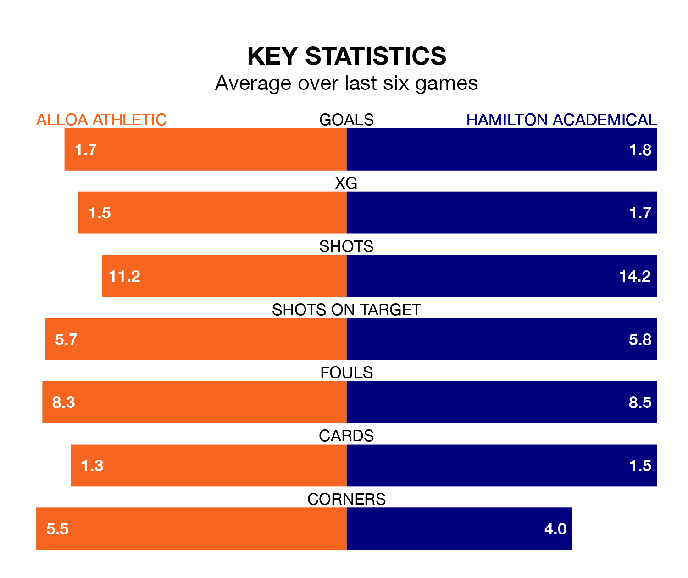

Two of League One's top sides face each other at the Indodrill Stadium in Saturday's kick-off, when third-placed Alloa Athletic host second-placed Hamilton Academical.
Alloa have picked up 16 wins and seven draws from 34 games so far this season, and sit 13 points below the visitors going into the 3pm match.
The Accies, meanwhile, have won 20 and drawn eight, picking up 68 points.
With 68 goals in 34 games so far this season, Hamilton Academical are the league's second-highest scorers with 2.0 goals per game. And they are conceding fewer than average, letting in 27 goals at a rate of 0.8 per game.
Alloa are also above average scorers, with 1.7 goals per game, compared to a league average of 1.6. They have conceded 1.5 goals per game.
In the last 10 years, Alloa and Hamilton Academical have played each other on six occasions. Alloa won two of them, Hamilton Academical three, and they drew once.
On average, Alloa scored 1.2 goals and the Accies 2.0 in those matches.
Their last meeting was on February 24, when Alloa won 2-1 away.
In Kevin O'Hara, the Accies have one of the league's sharpest shooters so far this season. He has notched 13 goals in 32 appearances, to sit fourth in the scoring charts.
His goal rate of one every 191 minutes is slightly quicker than that of Bobby Wales, Athletic's top scorer with a goal every 174 minutes, and a total of 12 goals in 24 games.
The home team are in mixed form in League One, with two wins and two draws from their last six games.
With four wins and a draw over that period, the visitors' form is better – they have taken 13 points from 18, compared to Alloa's eight.
Alloa's last match was on Saturday, a 3-2 win against Cove Rangers, with Wales (two) and Miko Aarne Virtanen getting the goals for Alloa.
Hamilton Academical beat Montrose 2-1 last time out, also on April 20, with Jamie Barjonas and Lee Kilday on the scoresheet.
Updated: 07:59 (UTC), 26/04/24